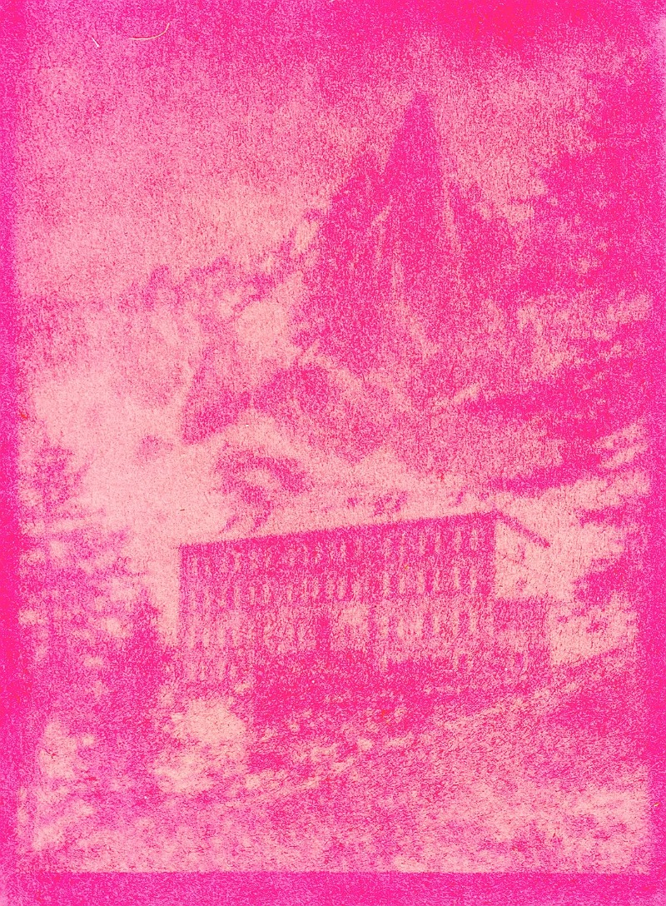

The second anthotype that I looked into was beetroot. Like the turmeric anthotype, the process for using photosensitive beetroot dye involves brushing the plant pigment onto fabric/paper, covering it with a negative and then exposing to sunlight for an extended period. With beetroot, all the exposure times that I could see were at least 5ish hours in high (6-8) UV levels. This is longer and higher UV that both cyanotypes and turmeric sun prints, which is obviously important information for planning my printing.
I was genuinely shocked by how vibrant and pink these images were coming out, and how much detail people were able to include in their negatives that would be transferred with this technique. I also took note that, like turmeric, the exposed areas would lighten, while covered areas remained dark. See the entries discussing this technique further on my development page.
click here to learn more

make space!